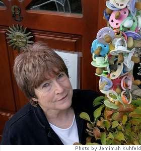

Ann Drysdale
Mad Annie Explains All
For all the people who make assumptions about the bunch of babies’ dummies that hangs by my front door.
In the house of the hanging noonoos
At the sign of the surrogate tit,
In mysterious mess lived an anchoress
Who collected discarded kit.
At the house of the dangling didies
She created an installation
That turned each find of the comforter kind
To a source of inspiration
Till her cherished collection of cushies
Became a delightful distraction
Whenever she thought in more depth than she ought
About oral satisfaction
And under the tumbling numnums
She would sit by herself and sigh
At the pitiful waste that her lapse of good taste
Exposed to the public eye.
For they sell them in packets of seven
As an easy commitment to bliss,
A knee-jerk reaction to dissatisfaction,
An over-the-counter kiss
And each of the colourful dumdums,
As far as she could discover,
Had slipped from the grip of an infant lip
Like a taken-for-granted lover
And if anyone noticed its downfall
It was always discreetly ignored
Till the madwoman came and pocketed same
To add to her magical hoard.
Now she sits by herself in her hovel
With the relics that should have been binned
And the noonoos, the numnums, the little kiss-condoms
Revolve in the winnowing wind.

My Lover Bought Me Saffron...
My lover bought me saffron
From a reputable grocer
And in my grinning innocence
I thought it brought us closer,
This meticulous attention
To my culinary needs
With the penises of crocuses
And promises of seeds.
But he has long been absent now
And I am growing sick
Of the limited potential
Of a vegetable dick.
So long has he been missing that
My store is almost gone
And I have used up all the little
Phalluses but one.
I seized it with a tweezers
And upon my palm it lay
With its propagating powder
That my breath could blow away
And I stumbled on a secret
That I never knew I knew;
I closed my eyes and made a wish
And pursed my lips and blew.
I have spiced the space between us
With a cloud of yellow dust
And my lover will be drawn to me
As magic says he must
And I will cook him kedgeree
And memory madras,
With the jissom of a blossom
As a little coup de grâce.
I will fill him up with fantasy
As far as I am able
And I will entertain him
From my place across the table
And look into his laughing face
And lose myself among
The golden ghosts of promises
Upon his silver tongue.
Ann Drysdale was born near Manchester, raised in London, and married in Birmingham. She ran a smallholding and brought up three children on the North York Moors, and now lives in South Wales. She was a journalist for many years, writing, among other things, the longest-running by-line column in the Yorkshire Evening Post. She has won a few prizes and published several books, including a memoir, Three-three, two-two, five six. Of her four volumes of poetry from Peterloo, the most recent, Between Dryden and Duffy, appeared in 2005. A fifth collection, Quaintness and Other Offences, is scheduled for Spring 2009.
|